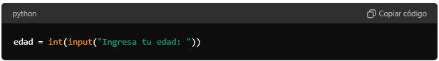

CONCEPTOS TEÓRICOS
DESICIONES Y COMPARACIONES
Conceptos Teóricos:
- Sentencias if, else, y elif
- if: Ejecuta un bloque de código si la condición es verdadera.
- else: Ejecuta un bloque de código si la condición del if es falsa.
- elif: Ejecuta un bloque de código si la condición anterior (if o elif) es falsa y la condición actual es verdadera.
- Comparaciones Simples
- Igual a (
==) - No igual a (
!=) - Mayor que (
>) - Menor que (
<) - Mayor o igual que (
>=) - Menor o igual que (
<=)
- Igual a (
Programa para determinar si es mayor de edad

1. Entrada de datos:

input("Ingresa tu edad: ")muestra un mensaje al usuario para que ingrese su edad.int(...)convierte la entrada del usuario de una cadena de texto (str) a un número entero (int).
2. Condicional if-else:

- La sentencia if verifica si la edad ingresada es mayor o igual a 18.
- Si la condición edad >= 18 es verdadera, se ejecuta print("Eres mayor de edad.").
- Si la condición es falsa, se ejecuta el bloque else, que imprime print("Eres menor de edad.").
Funcionamiento
- El usuario ingresa su edad.
- El programa determina si la persona es mayor o menor de edad y muestra el mensaje correspondiente.

Programa para determinar la calificación basada en la nota

1. Asignación de la variable nota:

- Aquí se asigna directamente el valor 85 a la variable
nota.
2. Condicional if-elif-else:

- La sentencia if verifica si la nota es mayor o igual a 90.
- Si la condición nota >= 90 es verdadera, se ejecuta print("Tienes una A.").
- Si no, se evalúa la siguiente condición elif, que verifica si la nota es mayor o igual a 80.
- Si nota >= 80 es verdadera, se ejecuta print("Tienes una B.").
- Si ninguna de las condiciones anteriores es verdadera, se evalúa la siguiente condición elif, que verifica si la nota es mayor o igual a 70.
- Si nota >= 70 es verdadera, se ejecuta print("Tienes una C."). Si ninguna de las condiciones anteriores es verdadera, se ejecuta el bloque else, que imprime print("Necesitas mejorar.").
Funcionamiento
- El valor de la nota se evalúa para determinar la calificación.
- Dependiendo del valor de la nota, se imprime un mensaje que indica la calificación (A, B, C) o la necesidad de mejorar.
Resumen
if: Ejecuta un bloque de código si la condición es verdadera.elif: Proporciona condiciones adicionales si la condicióniforiginal es falsa.else: Captura todos los demás casos cuando ninguna de las condiciones anteriores es verdadera.
Estas estructuras se utilizan en conjunto para permitir que el programa tome decisiones y ejecute diferentes bloques de código basados en diferentes condiciones.